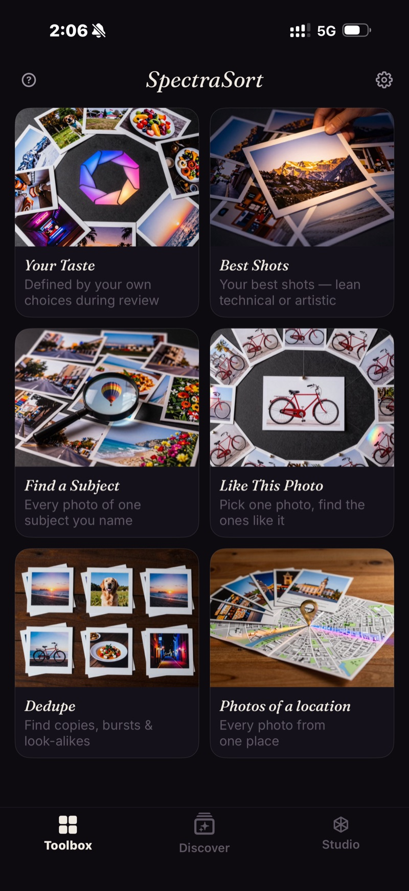
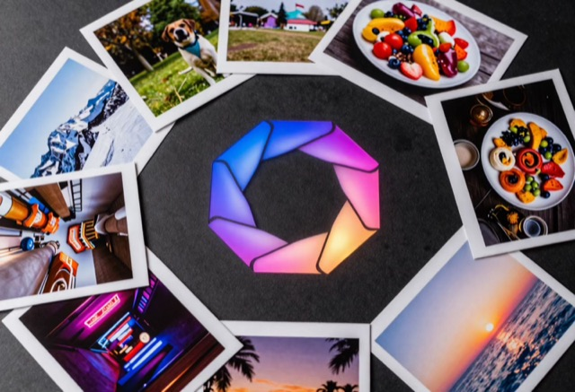
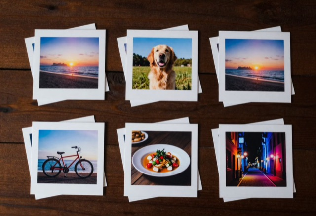
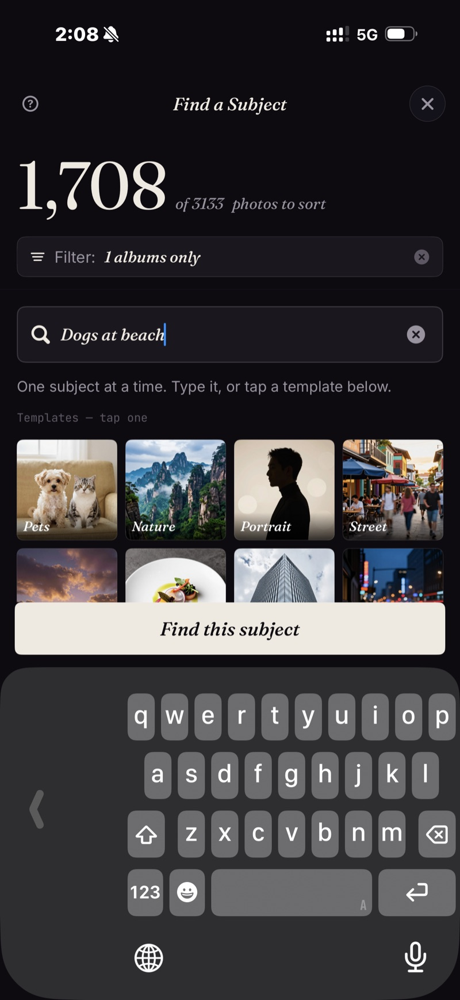
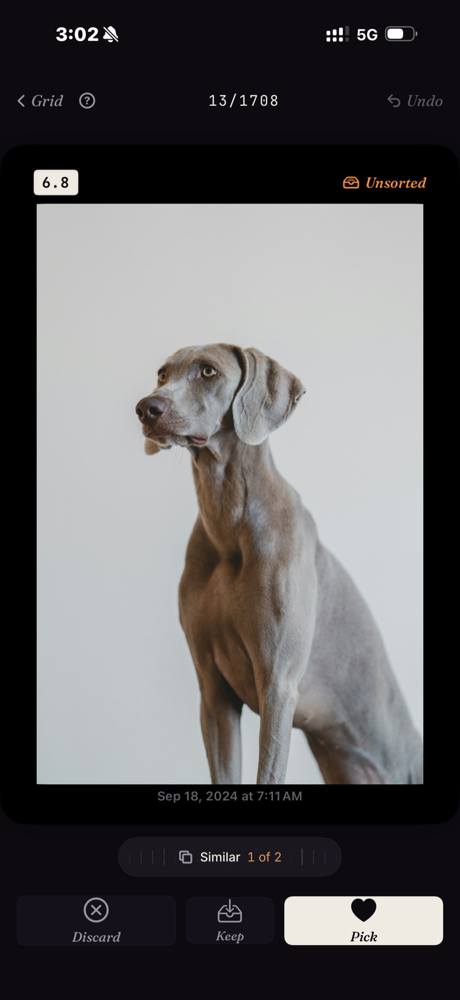

Your best photos. Surfaced.
Any phone can search your photos. SpectraSort ranks them — by quality, by your taste, by what you asked for — and hands you the winners, ready to keep, share, or clear. All of it on your iPhone.

Search shows you matches. SpectraSort shows you your best.
Your phone's built-in search can find "beach". What it can't do is tell you which of the 87 matches are worth keeping — or learn that you'd have picked the backlit one.
Finding is step one of three. Every result SpectraSort returns arrives already scored, best first.
Illustration — the same nine photos, re-ranked per question. Tap a chip.
Six ways in. One tap each.





It learns what you'd have picked.
Every review teaches it. The photos you keep and the ones you let go shape a profile of your preferences, built and stored on your phone. Run Your Taste and the top of the pile starts looking like the photos you'd have chosen yourself.
Pause its learning, reset it, or let it sharpen — what it rewards is yours. Name and save it in Studio, and keep as many as you like.

Search anything — and get it back best-first.
Concrete works — "roses", "swimming seals". Compound works — "dogs at the beach". Abstract works too — "cozy". And unlike a plain search, the matches come back ranked: sharpest and best-composed on top, look-alikes stacked.
No Apple Intelligence required, no region locks, on any iPhone running iOS 18.5. Days of wandering a city collapse into one search — type a theme, every shot of it lands in one grid. No albums, no tagging.

Pick one photo, find the rest.
Photograph one statue on a trip and get your whole accidental statue collection back. Similar-photo search that runs on your phone, not a server — your built-in Photos app has nothing like it.


One reference photo in, 1,708 photos ranked against it — scored and stacked.
11 shots of the same sunset → one swipe keeps the sharpest.
Duplicate photos, shots in a series, and look-alikes are gathered into stacks, so each repeated moment costs one decision instead of ten swipes. You choose what gets grouped, or turn stacking off.
Clearing them is where most camera-roll storage comes back. Deletions go through the system Photos dialog and land in Recently Deleted — so nothing is gone until you say so twice.
Face the library one piece at a time.
Scenes gather your trips, themes and series on their own — no albums to make, no tagging. A Timeline takes you year to month to day. Pick any slice and sort just that.


Swipe the winners in. Finish in one screen.
Best rise to the top. Right to pick, down to keep, left to let go — or let Autopick sort and just skim what it chose.
Batch Process sends your picks to an album or the share sheet and clears the rest. Nothing is applied until you tap, and deletions always confirm through the system Photos dialog.

When you want the controls.
Seven quality axes to weight however you like. A wheel that trades subject match against sheer quality. Up to three subjects at once. Save any of it as a named profile and reach for it again.
None of it is required. The Toolbox runs on sensible defaults — Studio is there for the day you want something specific.


Nothing leaves your phone.
The search, the scoring and your taste profile all run on-device, on Apple's Neural Engine. No account, no internet, nothing collected from your photos. The models ship pre-trained and never learn from your library. Corroborated by Apple's own App Privacy label.
Five free sorts a week, for everyone, forever — not a trial. Premium removes the limit and opens Studio's full controls.
No subscription. No renewals. Saving, sharing and deleting results is always free.
Start freeCommon questions.
Do my photos ever leave my phone?
Does SpectraSort use my photos to train AI?
How is this different from Apple Photos or Google Photos?
How fast is it?
What's free and what does Premium unlock?
Does it free up storage?
Will SpectraSort delete my photos?
What is the Your Taste profile?
I bought Premium in SpectraSort 2.x — do I keep it?
What devices does it run on?
Find your best photos.
Free for five sorts a week. iPhone, iOS 18.5 or later.
Download on the App Store